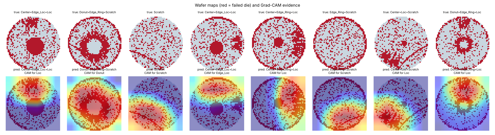

I'm Ali, a final-year Smart Computing student at Kyungdong University. My work applies machine learning to semiconductor manufacturing data: classifying wafer defect patterns, analysing yield and process drift, and compressing models for deployment on edge hardware.안녕하세요, 알리입니다. 경동대학교 스마트컴퓨팅학과 4학년으로, 반도체 제조 데이터에 머신러닝을 적용하는 연구를 하고 있습니다. 웨이퍼 불량 패턴 분류, 수율과 공정 드리프트 분석, 엣지 장비 배포를 위한 모델 경량화가 주요 주제입니다.
I also study the reliability of large language models, in particular how often they fabricate answers in Korean and in legal text. My undergraduate thesis develops a tool for verifying legal claims generated by LLMs.또한 대규모 언어 모델의 신뢰성, 특히 한국어와 법률 분야에서 사실을 지어내는 문제를 연구합니다. 졸업논문에서는 LLM이 생성한 법률 주장을 검증하는 도구를 개발하고 있습니다.
I am from Kenya and live in Sokcho, Korea. I speak Swahili, English and Korean.케냐 출신으로 현재 속초에 살고 있으며, 스와힐리어, 영어, 한국어를 사용합니다.
Yield and defect analytics수율·불량 분석
Model compression모델 경량화
LLM inference and memoryLLM 추론과 메모리
Hallucination evaluation환각 평가
Korean NLP한국어 자연어 처리
Projects프로젝트

Mixed-type wafer map defect classification웨이퍼 맵 복합 불량 패턴 분류
A multi-label CNN that identifies 8 defect types and 38 mixed patterns on 38,015 real-fab wafer maps (MixedWM38). Grad-CAM confirms the model attends to the failed dies that define each pattern.실제 팹 웨이퍼 맵 38,015장(MixedWM38)에서 8종 불량과 38개 복합 패턴을 식별하는 다중 레이블 CNN입니다. Grad-CAM으로 모델이 각 패턴을 이루는 불량 다이를 근거로 판단함을 확인했습니다.
Macro-F1 0.991 and 98.5% exact match on 5,701 held-out wafers.테스트 웨이퍼 5,701장에서 Macro-F1 0.991, 완전 일치 정확도 98.5%.
Predicting final-test failures from 590 fab sensors (UCI SECOM) with a time-based split and leakage-safe pipelines. A random split overstates performance 2–3×; adversarial validation shows the process itself drifted between periods.590개 공정 센서 데이터(UCI SECOM)로 최종 테스트 불량을 예측했습니다. 시간 순 분할과 누수 방지 파이프라인을 적용한 결과, 무작위 분할은 성능을 2~3배 과대평가했으며, Adversarial validation으로 기간 사이에 공정 자체가 변했음을 확인했습니다.
Drift detected with AUC 0.994; most influential sensor identified with SHAP.드리프트 탐지 AUC 0.994, SHAP으로 핵심 센서 도출.
ONNX export, calibrated INT8 static quantization and knowledge distillation applied to the wafer classifier, compared on size, latency and accuracy.웨이퍼 분류 모델에 ONNX 변환, 보정 기반 INT8 정적 양자화, 지식 증류를 적용하고 크기·지연시간·정확도를 비교했습니다.
14.6× smaller (4.73 → 0.32 MB) and 12× faster, macro-F1 within 0.15 points.모델 크기 14.6배 축소(4.73 → 0.32MB), 속도 12배 향상, Macro-F1 감소 0.15%p 이내.
Controlled sweeps of precision (FP16, Q8, Q4) and context length (512–8,192 tokens) on a local LLM. Decode throughput scales with model size while effective bandwidth stays constant, showing why AI accelerators rely on high-bandwidth memory.로컬 LLM에서 정밀도(FP16, Q8, Q4)와 컨텍스트 길이(512~8,192 토큰)를 통제해 측정했습니다. 생성 속도는 모델 크기에 반비례하고 실효 대역폭은 일정하게 유지되어, AI 가속기에 HBM이 필요한 이유를 보여줍니다.
3.0× faster decoding at 4-bit; effective bandwidth 74–78 GB/s across formats.4비트에서 생성 속도 3.0배, 형식과 무관한 실효 대역폭 74~78 GB/s.
A local assistant that answers Korean or English questions with cited sources, evaluated on a hand-reviewed test set with an independent LLM judge. The dominant failure mode was over-refusal rather than hallucination.한국어·영어 질문에 출처를 인용해 답하는 로컬 시스템으로, 직접 검수한 평가셋과 독립된 LLM 평가자로 측정했습니다. 주요 실패 원인은 환각이 아니라 과도한 답변 거부였습니다.
70 hand-written Korean questions, including false premises such as non-existent law articles, across four open models and two system prompts. The automated judge was validated against a keyword rule and manual review.존재하지 않는 법 조항 등 거짓 전제를 포함한 한국어 70문항을 직접 구축해 4개 공개 모델과 2개 시스템 프롬프트로 평가했습니다. 자동 평가자는 키워드 규칙과 수작업 검토로 검증했습니다.
Hallucination 57–93% under a plain prompt; one cautionary instruction reduced it by 17.5 points on average.기본 프롬프트에서 환각률 57~93%, 주의 지시 한 문장으로 평균 17.5%p 감소.
Verifying legal claims generated by large language models. A Python tool that checks LLM-generated legal statements against source documents and flags unsupported or fabricated content. Code and results will be published on completion.대규모 언어 모델이 생성한 법률 주장 검증. LLM이 작성한 법률 진술을 원문 자료와 대조해 근거 없거나 지어낸 내용을 탐지하는 Python 도구입니다. 완성 후 코드와 결과를 공개할 예정입니다.
Education학력
– Aug 2027~ 2027.08B.S. in Smart Computing스마트컴퓨팅학과 학사, Kyungdong University, Korea경동대학교 GPA 3.8학점 3.8
– Apr 2022~ 2022.04KCSE (B+), Kanga High School, Kenya케냐 캉가 고등학교